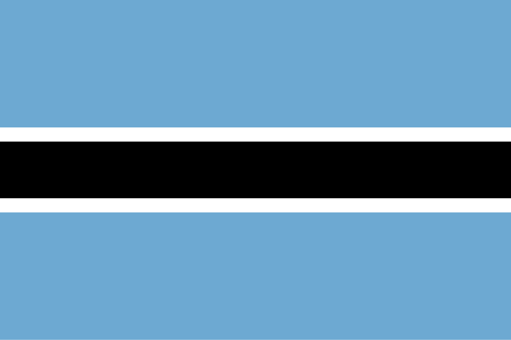

Botsuana
 Botsuana, oficialmente República do Botsuana, é um país sem litoral situado na África Austral, com cerca de 2,4 milhões de habitantes e território comparável ao da França. O país é majoritariamente plano, sendo aproximadamente 70% de seu território ocupado pelo Deserto do Kalahari. Faz fronteira com África do Sul, Namíbia, Zâmbia e Zimbábue. A população é predominantemente do grupo étnico Tswana, que representa quase 80% dos habitantes e descende de povos de língua bantu que migraram para a região antes de 600 d.C. Historicamente, a região foi colonizada pelos britânicos em 1885, tornando-se o protetorado da Bechuanalândia, até conquistar a independência em 1966 como Botsuana. Desde então, é uma república parlamentar, conhecida por sua estabilidade política e eleições regulares, sendo considerada em 2024 o país menos corrupto da África continental. A economia é dominada pelo turismo e mineração, especialmente diamantes, o que garante uma renda per capita relativamente alta e o segundo maior Índice de Desenvolvimento Humano da África Subsaariana continental. Botsuana também é membro de organizações regionais e internacionais, como a União Aduaneira da África Austral, SADC, Comunidade das Nações e ONU.
Historia
A região onde hoje se encontra Botsuana foi originalmente habitada por povos San e Khoisan, caçadores-coletores autóctones da África Austral. A partir de antes de 600 d.C., grupos bantos, incluindo os ancestrais do povo Tswana, migraram para a área em várias ondas, estabelecendo comunidades agrícolas e organizadas politicamente. Esses grupos desenvolveram estruturas sociais e reinos locais que moldaram a base cultural e política da região. No século XIX, diante da expansão colonial europeia, líderes Tswana negociaram tratados com os britânicos para manter certa autonomia, resultando na criação do protetorado da Bechuanalândia em 1885, sob a administração britânica, garantindo proteção frente à colonização agressiva de países vizinhos como a África do Sul.
Durante o século XX, a Bechuanalândia permaneceu um protetorado britânico, mantendo estabilidade relativa e estruturas tradicionais Tswana. Com a onda de descolonização da África, o país conquistou sua independência em 30 de setembro de 1966, adotando o nome Botsuana e tornando-se uma república parlamentar. Desde então, manteve um histórico consistente de estabilidade política e eleições democráticas, sendo dominada por partidos democráticos majoritários, com crescimento econômico sustentado principalmente pelo turismo e mineração de diamantes. A política estável e o desenvolvimento econômico transformaram Botsuana em um modelo de governança na África, destacando-se por baixos índices de corrupção e elevados padrões de vida em comparação com outros países da região.
Cultura
A cultura de Botsuana é profundamente influenciada pelo povo Tswana, que representa cerca de 80% da população, e por outros grupos étnicos menores, como os Kalanga, Basarwa (San) e Bakalanga. A sociedade é marcada por tradições comunitárias e valores de coletividade, respeito aos ancestrais e estruturas familiares extensas. A língua oficial é o ingles, herdado do período colonial britânico, mas o setswana é amplamente falado e desempenha papel central na vida cotidiana, educação e cultura popular. As expressões culturais incluem música e dança tradicionais, como os borankana e tsutsube, que acompanham festas, cerimônias de colheita e rituais de iniciação. A arte e a artefatos tradicionais, como cestaria, esculturas em madeira e joias, refletem a vida comunitária e a espiritualidade. A religião predominante é o cristianismo, coexistindo com crenças tradicionais africanas, especialmente a veneração de espíritos e ancestrais. A culinária é simples, baseada em milho, sorgo, feijão e carne seca, refletindo o modo de vida agrícola e pastoril. A cultura botsuanense combina assim tradição e modernidade, mantendo a identidade Tswana enquanto se adapta à vida urbana e globalizada.
Clima
O clima de Botsuana é predominantemente semiárido, caracterizado por longos períodos secos e chuvas irregulares, devido à grande influência do Deserto do Kalahari, que ocupa cerca de 70% do território. As temperaturas podem variar bastante, com verões muito quentes, chegando a mais de 40 °C em algumas regiões, e invernos relativamente frios, especialmente à noite, nas áreas planálticas e desérticas. A estação chuvosa ocorre geralmente entre novembro e março, enquanto o restante do ano é marcado por seca prolongada. O clima semiárido molda a vegetação e a fauna locais, limitando a agricultura a regiões irrigadas e adaptando a vida animal a condições áridas. As chuvas irregulares e a escassez de água tornam a gestão dos recursos hídricos essencial para a economia, especialmente para a pecuária e o turismo, que dependem da sobrevivência da fauna típica do Kalahari. Esse clima extremo e contrastante faz de Botsuana um país de ecossistemas únicos, com savanas e desertos que sustentam espécies adaptadas a essas condições.
Biodiversidade
Botsuana possui uma biodiversidade rica e adaptada ao clima semiárido, marcada principalmente pelas vastas savanas e pelo Deserto do Kalahari. As regiões mais úmidas, como o Delta do Okavango, abrigam ecossistemas únicos, com grande concentração de elefantes, leões, búfalos, girafas, antílopes e hipopótamos, além de centenas de espécies de aves e répteis. O Delta do Okavango, em particular, é considerado um dos maiores santuários naturais da África, atraindo turistas e sendo crucial para a preservação da fauna local.
O país conta com diversas áreas protegidas e parques nacionais, como o Parque Nacional Chobe, o Parque Nacional de Moremi e o Parque Nacional Nxai Pan, que têm papel fundamental na conservação da fauna e flora, protegendo espécies ameaçadas e ecossistemas sensíveis. Apesar disso, a biodiversidade de Botsuana enfrenta desafios, como mudanças climáticas, caça ilegal e expansão agrícola, exigindo políticas eficazes de manejo sustentável e proteção ambiental para garantir a preservação dos recursos naturais e o desenvolvimento do ecoturismo.
Cidades
As cidades de Botsuana refletem o desenvolvimento urbano concentrado principalmente em áreas planas e próximas a fontes de água, devido ao predomínio do Deserto do Kalahari em grande parte do território. Embora o país seja pouco populoso, as cidades desempenham papel central na economia, administração, educação e serviços, funcionando como centros regionais de comércio, indústria e turismo. As duas maiores cidades de Botsuana são Gaborone e Francistown. Gaborone, localizada próxima à fronteira com a África do Sul, é a capital e centro administrativo, concentrando órgãos governamentais, instituições financeiras e infraestrutura moderna. Francistown, no nordeste, é o segundo maior centro urbano, historicamente importante pelo comércio e mineração de ouro, sendo também um polo de educação e serviços regionais. Essas cidades são essenciais para a vida econômica, social e política do país, conectando as áreas urbanas ao restante do território semiárido de Botsuana.
.jpeg)